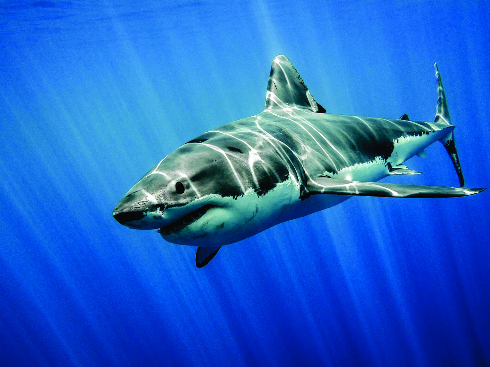

Hiu
- Klasifikasi: Ikan
- Habitat: Laut Lepas
- Makanan: Carnivora (daging)
- Fakta Unik:Hiu adalah sekelompok ikan dengan kerangka tulang rawan yang lengkap, dan tubuh yang kokoh. Mereka bernapas dengan menggunakan lima hingga tujuh liang insang (tergantung pada spesiesnya). Letak insang tersebut ada di samping, atau dimulai sedikit di belakang, kepalanya. Hiu mempunyai tubuh yang dilapisi kulit dermal denticles untuk melindungi kulit mereka dari kerusakan, dari parasit, dan untuk menambah dinamika air. Mereka mempunyai beberapa deret gigi yang dapat digantikan.